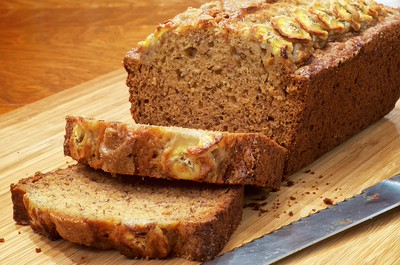

Tips
Here are a few banana bread tips and tricks from the expert:
- Avoid choosing green bananas. Instead opt for ripe bananas that are yellow with a few brown spots.
- The best and easiest way to mash bananas? With a fork!
- The recipe calls for a 9x5 loaf pan, but it’s fine if you have something smaller – just increase the cook time by a few minutes.
How to store Banana Bread
Place a paper towel at the bottom of an airtight container or in a zip-top bag. Place the cooled banana bread on top of it, then cover the loaf with another paper towel. Seal the container tightly.
How long does banana bread last?
Banana bread will last for about four days at room temperature. If you freeze it, banana bread will last two to four months.
Can You Freeze Banana Bread?
Yes, banana bread freezes very well! Wrap the cooled loaf tightly in one layer of storage wrap, then one layer of aluminum foil. You can also freeze each slice individually if you don't plan to thaw the whole loaf at once.
Ingredients
- 2 cups all-purpose flour
- 1 teaspoon baking soda
- ¼ teaspoon salt
- ¾ cup brown sugar
- ½ cup butter
- 2 large eggs, beaten
- 2 ⅓ cups mashed overripe bananas
Direction
- Gather all ingredients. Preheat the oven to 350 degrees F (175 degrees C). Lightly grease a 9x5-inch loaf pan.
- Combine flour, baking soda, and salt in a large bowl. Beat brown sugar and butter with an electric mixer in a separate large bowl until smooth. Stir in eggs and mashed bananas until well blended. Stir banana mixture into flour mixture until just combined.
- Pour batter into the prepared loaf pan.
- Bake in the preheated oven until a toothpick inserted into the center comes out clean, about 60 minutes.
- Let bread cool in pan for 10 minutes, then turn out onto a wire rack to cool completely.
- Enjoy!
Explain the difference between inline, embedded, and external CSS.
- Inline: written directly on an element
- Embedded: written in a style tag inside the HTML file
- External: written in a separate .css file
Explain why you should only use external CSS.
External CSS should be used because it keeps code clean, consistent, reusable, and easy to maintain across multiple pages.
What is a selector used for?
A selector is used to choose which HTML elements the CSS rules apply to.